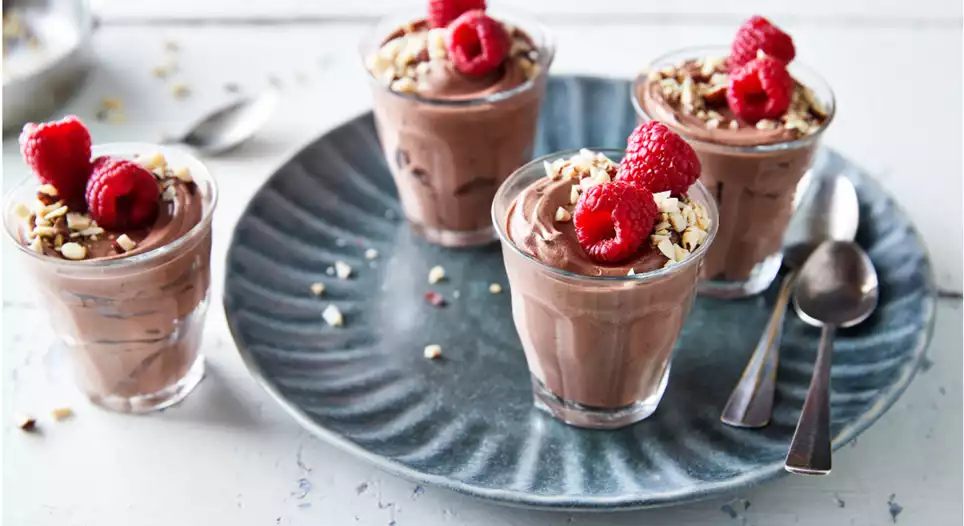

Een romig en luchtig nagerecht dat je snel kunt maken. Perfect als afsluiter van een diner of buffet.

Tip Voeg een beetje geraspte chocolade of cacaopoeder bovenop voor een extra chique uitstraling.